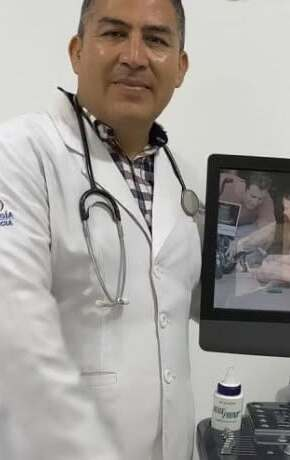
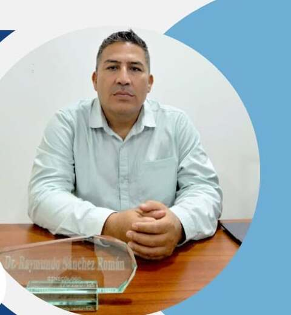

Tu salud femenina, acompañada por manos expertas en cada etapa de tu vida.
El Dr. Raymundo Sánchez Román brinda atención ginecológica y obstétrica cercana, profesional y confidencial: desde tu control ginecológico anual hasta el nacimiento de tu bebé. Consultorio en el Centro de Tapachula, atendiendo a mujeres de todo el Soconusco.
Soy especialista Gineco-Obstetra, preparado para brindarte la mejor atención. Permíteme ayudarte a tener una mejor calidad de vida.
¿Sientes síntomas de parto? Así sabrás cuándo acudir
Reconocer a tiempo las señales de parto puede marcar la diferencia para ti y tu bebé. Estos síntomas pueden presentarse incluso antes de completar la semana 37 de embarazo — si notas alguno, no esperes.
-
Contracciones más seguidas
Si notas que tus contracciones se vuelven más frecuentes e intensas, es momento de prestar atención.
-
Pérdida de líquido o sangrado vaginal
Cualquier pérdida de líquido amniótico o sangrado debe evaluarse de inmediato.
-
Calambres abdominales
Los calambres persistentes en el abdomen pueden ser una señal temprana de trabajo de parto.
-
Dolor de espalda baja
El dolor lumbar constante, en especial si se combina con los síntomas anteriores, es una señal de alerta.
-
Comunícate con tu médico
Ante cualquier duda durante tu embarazo, contacta al Dr. Raymundo Sánchez para recibir orientación oportuna.
Atención ginecológica y obstétrica integral, en cada etapa
Del control anual al nacimiento de tu bebé: servicios pensados para cuidar tu salud femenina con calidez y profesionalismo. Da clic en el servicio que buscas y agenda tu cita.
Control Prenatal y Embarazo de Alto Riesgo
Seguimiento puntual de tu embarazo, incluyendo el monitoreo especializado de embarazos de alto riesgo, para tu tranquilidad y la salud de tu bebé.
Agendar por WhatsAppParto, Cesárea e Histerectomías
Atención quirúrgica y obstétrica integral, con un equipo preparado para acompañarte con seguridad en uno de los momentos más importantes de tu vida.
$24,000 precio totalAgendar por WhatsApp
Papanicolaou y Colposcopia
Estudios de detección oportuna para la prevención del cáncer cervicouterino, realizados con calidez y total confidencialidad.
Agendar por WhatsAppCheck-up Ginecológico Anual
Revisión integral que incluye consulta médica, colposcopia, papanicolaou, entrega de resultados y ultrasonido pélvico, además de valoración de sangrado uterino anormal.
$1,200 check-up completoAgendar por WhatsApp
Climaterio y Menopausia
Acompañamiento médico especializado durante el climaterio y la menopausia, etapas que merecen atención cercana y cuidado personalizado.
Agendar por WhatsAppPrevención del VPH
Orientación y aplicación de la vacuna contra el VPH, además de recomendaciones para proteger tu salud sexual y reproductiva.
Agendar por WhatsAppMomentos de la atención diaria en el consultorio
Control prenatal Consulta y ultrasonido Preparación para el parto 
En consultorio
Cada nacimiento es un momento irrepetible. Lo cuidamos como tal.
Contar con un equipo preparado y atención quirúrgica responsable marca la diferencia en los momentos más importantes de tu embarazo. Esa es la calidad de servicio que encontrarás en cada consulta.
Conoce la atención obstétricaUn especialista dedicado a tu bienestar

Dr. Raymundo Sánchez Román
El Dr. Raymundo Sánchez Román es médico especialista en Ginecología y Obstetricia, comprometido con ofrecer una atención cercana, profesional y confidencial a las mujeres de Tapachula y todo el Soconusco. Su consultorio cuenta con horarios pensados para adaptarse a tu rutina, y línea directa para urgencias.
"Soy especialista Gineco-Obstetra, preparado para brindarte la mejor atención. Permíteme ayudarte a tener una mejor calidad de vida."
Ginecólogo en Tapachula, Chiapas: atención cercana en el Soconusco
Buscar un ginecólogo en Tapachula de confianza es el primer paso para cuidar tu salud. El consultorio del Dr. Raymundo Sánchez Román está en pleno Centro de Tapachula, con fácil acceso para pacientes de toda la región del Soconusco.
¿Por qué elegir un ginecólogo local en Tapachula?
Contar con un especialista en ginecología y obstetricia cerca de casa facilita el seguimiento puntual de tu control prenatal, tus estudios anuales y cualquier urgencia obstétrica, sin necesidad de trasladarte a otra ciudad. El Dr. Raymundo Sánchez Román combina experiencia clínica con un trato cercano y confidencial, pensado para las mujeres de Tapachula y sus alrededores.
Ya sea que busques un ginecólogo para tu control prenatal, una segunda opinión, tu papanicolaou anual o atención obstétrica para tu parto, el consultorio en 7ª Avenida Norte, Centro de Tapachula, está a tu disposición por cita previa. Conoce también las señales de parto que no debes ignorar.
Municipios del Soconusco que atendemos
Agendar cita por WhatsAppAsí te acompañamos, de principio a fin
Un proceso claro y ordenado para que sepas exactamente qué esperar en cada etapa de tu atención.
-
Agenda tu cita
Escríbenos por WhatsApp o llama al consultorio para reservar el horario que mejor se adapte a ti.
-
Consulta inicial
Platicamos sobre tu historia clínica y tus necesidades para construir una atención personalizada.
-
Valoración y estudios
Realizamos los estudios necesarios: ultrasonido, papanicolaou, colposcopia u otros, según tu caso.
-
Diagnóstico claro
Te explicamos los resultados con lenguaje sencillo, resolviendo todas tus dudas.
-
Plan de tratamiento
Diseñamos contigo el siguiente paso, ya sea seguimiento, tratamiento o procedimiento.
-
Acompañamiento continuo
Te acompañamos en cada etapa, desde el control anual hasta el parto.
Preguntas frecuentes sobre ginecología en Tapachula
Resolvemos las dudas más comunes de nuestras pacientes en Tapachula y el Soconusco. Si tienes otra pregunta, escríbenos por WhatsApp.
¿Cuánto cuesta la consulta con un ginecólogo en Tapachula?
La consulta con el Dr. Raymundo Sánchez tiene un costo de $800 pesos e incluye ultrasonido. El check-up ginecológico anual completo (consulta, colposcopia, papanicolaou y ultrasonido pélvico) tiene un costo de $1,200 pesos. Puedes confirmar precios vigentes por WhatsApp.
¿Cómo sé si estoy presentando señales de parto?
Algunas señales de alerta son contracciones más frecuentes e intensas, pérdida de líquido o sangrado vaginal, calambres abdominales persistentes y dolor de espalda baja constante. Si presentas cualquiera de estos síntomas, comunícate de inmediato con tu médico.
¿Qué incluye el check-up ginecológico anual?
El check-up ginecológico anual incluye consulta médica, colposcopia, papanicolaou, entrega de resultados, ultrasonido pélvico y valoración de sangrado uterino anormal.
¿Atienden pacientes fuera de Tapachula?
Sí. El consultorio está en el Centro de Tapachula y recibe pacientes de todo el Soconusco, incluyendo Metapa, Huehuetán, Cacahoatán, Suchiate, Frontera Hidalgo y Tuxtla Chico, Chiapas.
¿Cómo agendo una cita con el Dr. Raymundo Sánchez?
Puedes agendar tu cita por WhatsApp al 963 121 2927, por correo electrónico o llenando el formulario de contacto de esta página. La atención es por cita previa, de acuerdo a disponibilidad.
Agenda tu cita hoy mismo
Escríbenos por WhatsApp, correo electrónico o completa el formulario. Te responderemos a la brevedad.
Dr. Raymundo Sánchez Román
- 963 121 2927 · Celular y WhatsApp
- ray_medicina060173@hotmail.com
- 7ª Avenida Norte No. 17 Bis interior, Tapachula Centro, Chiapas, C.P. 30700
- Consulta por cita previa, de acuerdo a disponibilidad
Atendemos pacientes de Tapachula y de Metapa, Huehuetán, Cacahoatán, Suchiate, Frontera Hidalgo y Tuxtla Chico, Chiapas.
Cuéntanos qué necesitas
Toda la información que compartas es tratada con absoluta confidencialidad.